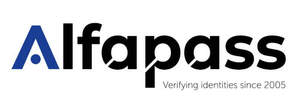

Trade Mark Journal No.2025/048 28 November 2025
UK00004294953 14 November 2025 (9,35,42)

A disclaimer is applicable for the wording 'verifying identities since 2005'.
International priority date claimed: 30 July 2025
(Benelux Office for Intellectual Property (BOIP))
(1529957)
- Class 9
- Analysis, detection, localisation and identification devices, apparatus and instruments; sensors; scanners; electronic tags and tag readers for personal and product registration; electronic badges for personal and product registration; coded (card-shaped) information carriers for identification purposes; software for observation systems, access control systems, detection systems, tracking systems and identification systems; software for the processing, archiving, interpretation, manipulation, display and transmission of data; electronic identification systems; mobile applications for identity verification and access control; equipment and software for biometric identification and authentication; NFC technology and digital keys for access management.
- Class 35
- Administrative services relating to identity management, subscription management, invoicing and visitor registration (visitor management); administrative management and administrative organisation of access to secure areas or facilities; business advice relating to processes surrounding digital and physical access control.
- Class 42
- Design, development, implementation and maintenance of software for analysis, detection, localisation and identification devices, apparatus and instruments, electronic labels (tags), tag readers for personal and product registration, coded (card-shaped) information carriers for identification purposes, sensors and scanners; design, development, implementation and maintenance of software for observation systems, access control systems, detection systems, tracking systems and identification systems; design, development, implementation and maintenance of software for the processing, archiving, interpretation, manipulation, display and transmission of data, electronic identification systems; design, development, implementation and maintenance of mobile applications (software) for identity verification and access control, and software for biometric identification and authentication, NFC technology and digital keys for access management; consultancy in the field of information and communication technology (ICT); design and development of software; design and management of ICT infrastructure; hosting and maintenance of online platforms for identity and access management; Software-as-a-Service (SaaS) for digital authentication and visitor management; hosting and maintenance of platforms for digital identification and authentication. .
ALFAPASS, naamloze vennootschap
Representative: Bureau M.F.J. Bockstael nv